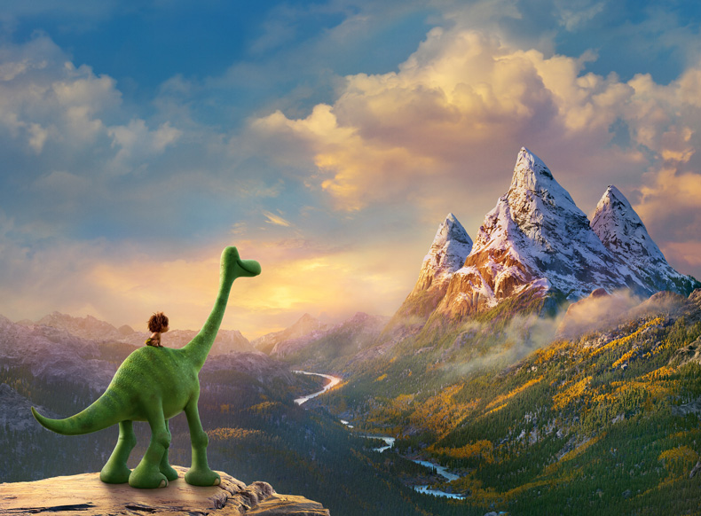

به عقیده بالبی غرایز در گونهها نوعی هستند یعنی الگوی رفتاری
معینی تنها در اعضای گونههای خاصی مشاهده میشود. در این قسمت
میتوانیم به ادامه دادن راه پدر توسط فرزندان بهطور غریزی و در
انیمیشن دایناسور خوب به نکاتی اشاره دارم که از مهمترین نکات این
انیمیشن ترس شخصیت اصلی داستان “آرلو” هست و اینکه چطور میشود بر
ترس غلبه کرد؟ هنری پدر آرلو میخواهد تا آرلو بر ترسش غلبه کند و
به او آموزش غلبه بر ترس میدهد و به او میگوید: گاهی باید خطر
کرد تا زیباییهای زندگی را دید. از نکات دیگر به القای حیوانی
بودن انسان و حالات و رفتار انسان گونه حیوانات اشاره داشت. در
القای حیوانی بودن انسان به مخاطب تلقین میکند که حالات حیوانی
بودن انسان را در تصویر کشیدن انسان با صفات حیوانی و ارتباط انسان
با حیوان اشاره میکند، همانطوری که در انیمیشن دایناسور خوب
مشاهده میشود اسپات یک انسان اولیه است که دارای صفات حیوانی چون
راه رفتن حیوانات، گاز گرفتن، بو کشیدن و لیسیدن دست خود
میباشد.برداشت محصولات کشاورزیشان و انبارکردن دانهها اشاره
داشت.

آرلو یک دایناسور دوستداشتنی در انیمیشن دایناسور خوب است که در یک
خانواده همراه با پدر و مادر و خواهر و برادرش زندگی میکند. پدر
آرلو هنری نام دارد که بر روی زمین کشاورزی کار میکند و هرکسی یک
مسئولیتی را در خانواده به عهده دارد. رفتار ما انسانها شبیه به
رفتار حیوانات هست که رفتار پدر و مادر خود را الگو قرار داده و از
آنها پیروی میکنیم، در دنیایی که انسانها و دایناسورها کنار
یکدیگر زندگی میکنند، آرلو با یک پسربچه به نام اسپات آشنا میشود
که طرز پوشش و رفتارش همانند انسانهای اولیه میماند و با او وارد
سفر میشود که در پایان داستان هم آرلو و هم او به خانه و خانواده
برمیگردند. در انیمیشن دایناسور خوب میتوان به دوره عصرحجر همان
دوران همزیستی مسالمتآمیز انسانها و دایناسورها در یک دوره اشاره
کرد، همچنین میتوان به نظریه رشدی لورنز و نظریه رشدی بالبی اشاره
داشت. به عقیده لورنز نقشپذیری از والدین همواره فرا فردی است.
(۱۹۳۵) یعنی اینکه فرزند یا از پدر و یا از مادر و یا از هردوی آنها
نقش میپذیرد که میتوانیم به نقشپذیری آرلو و خواهر و برادرش اشاره
کنیم و انگار با دانشی ناکامل در مورد محرکهایی که پاسخگو هستند
اشاره شده است. نقش پدر آرلو در از بین بردن ترسش … آرلو یک دایناسور
دوستداشتنی در انیمیشن دایناسور خوب است که در یک خانواده همراه با
پدر و مادر و خواهر و برادرش زندگی میکند. پدر آرلو هنری نام دارد
که بر روی زمین کشاورزی کار میکند و هرکسی یک مسئولیتی را در
خانواده به عهده دارد. رفتار ما انسانها شبیه به رفتار حیوانات هست
که رفتار پدر و مادر خود را الگو قرار داده و از آنها پیروی
میکنیم، در دنیایی که انسانها و دایناسورها کنار یکدیگر زندگی
میکنند، آرلو با یک پسربچه به نام اسپات آشنا میشود که طرز پوشش و
رفتارش همانند انسانهای اولیه میماند و با او وارد سفر میشود که
در پایان داستان هم آرلو و هم او به خانه و خانواده برمیگردند. در
انیمیشن دایناسور خوب میتوان به دوره عصرحجر همان دوران همزیستی
مسالمتآمیز انسانها و دایناسورها در یک دوره اشاره کرد، همچنین
میتوان به نظریه رشدی لورنز و نظریه رشدی بالبی اشاره داشت. به
عقیده لورنز نقشپذیری از والدین همواره فرا فردی است. (۱۹۳۵) یعنی
اینکه فرزند یا از پدر و یا از مادر و یا از هردوی آنها نقش
میپذیرد که میتوانیم به نقشپذیری آرلو و خواهر و برادرش اشاره
کنیم و انگار با دانشی ناکامل در مورد محرکهایی که پاسخگو هستند
اشاره شده است. نقش پدر آرلو در از بین بردن ترسش …

آرلو یک دایناسور دوستداشتنی در انیمیشن دایناسور خوب است که در
یک خانواده همراه با پدر و مادر و خواهر و برادرش زندگی میکند.
پدر آرلو هنری نام دارد که بر روی زمین کشاورزی کار میکند و هرکسی
یک مسئولیتی را در خانواده به عهده دارد. رفتار ما انسانها شبیه
به رفتار حیوانات هست که رفتار پدر و مادر خود را الگو قرار داده و
از آنها پیروی میکنیم، در دنیایی که انسانها و دایناسورها کنار
یکدیگر زندگی میکنند، آرلو با یک پسربچه به نام اسپات آشنا میشود
که طرز پوشش و رفتارش همانند انسانهای اولیه میماند و با او وارد
سفر میشود که در پایان داستان هم آرلو و هم او به خانه و خانواده
برمیگردند.
در انیمیشن دایناسور خوب میتوان به دوره عصرحجر همان دوران
همزیستی مسالمتآمیز انسانها و دایناسورها در یک دوره اشاره
کرد، همچنین میتوان به نظریه رشدی لورنز و نظریه رشدی بالبی
اشاره داشت.
به عقیده لورنز نقشپذیری از والدین همواره فرا فردی است. (۱۹۳۵)
یعنی اینکه فرزند یا از پدر و یا از مادر و یا از هردوی آنها نقش
میپذیرد که میتوانیم به نقشپذیری آرلو و خواهر و برادرش اشاره
کنیم و انگار با دانشی ناکامل در مورد محرکهایی که پاسخگو هستند
اشاره شده است. نقش پدر آرلو در از بین بردن ترسش … آرلو یک
دایناسور دوستداشتنی در انیمیشن دایناسور خوب است که در یک
خانواده همراه با پدر و مادر و خواهر و برادرش زندگی میکند. پدر
آرلو هنری نام دارد که بر روی زمین کشاورزی کار میکند و هرکسی یک
مسئولیتی را در خانواده به عهده دارد. رفتار ما انسانها شبیه به
رفتار حیوانات هست که رفتار پدر و مادر خود را الگو قرار داده و از
آنها پیروی میکنیم، در دنیایی که انسانها و دایناسورها کنار
یکدیگر زندگی میکنند، آرلو با یک پسربچه به نام اسپات آشنا میشود
که طرز پوشش و رفتارش همانند انسانهای اولیه میماند و با او وارد
سفر میشود که در پایان داستان هم آرلو و هم او به خانه و خانواده
برمیگردند. در انیمیشن دایناسور خوب میتوان به دوره عصرحجر همان
دوران همزیستی مسالمتآمیز انسانها و دایناسورها در یک دوره
اشاره کرد، همچنین میتوان به نظریه رشدی لورنز و نظریه رشدی بالبی
اشاره داشت. به عقیده لورنز نقشپذیری از والدین همواره فرا فردی
است. (۱۹۳۵) یعنی اینکه فرزند یا از پدر و یا از مادر و یا از
هردوی آنها نقش میپذیرد که میتوانیم به نقشپذیری آرلو و خواهر
و برادرش اشاره کنیم و انگار با دانشی ناکامل در مورد محرکهایی که
پاسخگو هستند اشاره شده است. نقش پدر آرلو در از بین بردن ترسش …

به عقیده بالبی غرایز در گونهها نوعی هستند یعنی الگوی رفتاری معینی
تنها در اعضای گونههای خاصی مشاهده میشود. در این قسمت میتوانیم
به ادامه دادن راه پدر توسط فرزندان بهطور غریزی و در انیمیشن
دایناسور خوب به نکاتی اشاره دارم که از مهمترین نکات این انیمیشن
ترس شخصیت اصلی داستان “آرلو” هست و اینکه چطور میشود بر ترس غلبه
کرد؟ هنری پدر آرلو میخواهد تا آرلو بر ترسش غلبه کند و به او آموزش
غلبه بر ترس میدهد و به او میگوید: گاهی باید خطر کرد تا
زیباییهای زندگی را دید. از نکات دیگر به القای حیوانی بودن انسان و
حالات و رفتار انسان گونه حیوانات اشاره داشت. در القای حیوانی بودن
انسان به مخاطب تلقین میکند که حالات حیوانی بودن انسان را در تصویر
کشیدن انسان با صفات حیوانی و ارتباط انسان با حیوان اشاره میکند،
همانطوری که در انیمیشن دایناسور خوب مشاهده میشود اسپات یک انسان
اولیه است که دارای صفات حیوانی چون راه رفتن حیوانات، گاز گرفتن، بو
کشیدن و لیسیدن دست خود میباشد.برداشت محصولات کشاورزیشان و
انبارکردن دانهها اشاره داشت.
به عقیده بالبی غرایز در گونهها نوعی هستند یعنی الگوی رفتاری معینی
تنها در اعضای گونههای خاصی مشاهده میشود. در این قسمت میتوانیم
به ادامه دادن راه پدر توسط فرزندان بهطور غریزی و در انیمیشن
دایناسور خوب به نکاتی اشاره دارم که از مهمترین نکات این انیمیشن
ترس شخصیت اصلی داستان “آرلو” هست و اینکه چطور میشود بر ترس غلبه
کرد؟ هنری پدر آرلو میخواهد تا آرلو بر ترسش غلبه کند و به او آموزش
غلبه بر ترس میدهد و به او میگوید: گاهی باید خطر کرد تا
زیباییهای زندگی را دید. از نکات دیگر به القای حیوانی بودن انسان و
حالات و رفتار انسان گونه حیوانات اشاره داشت. در القای حیوانی بودن
انسان به مخاطب تلقین میکند که حالات حیوانی بودن انسان را در تصویر
کشیدن انسان با صفات حیوانی و ارتباط انسان با حیوان اشاره میکند،
همانطوری که در انیمیشن دایناسور خوب مشاهده میشود اسپات یک انسان
اولیه است که دارای صفات حیوانی چون راه رفتن حیوانات، گاز گرفتن، بو
کشیدن و لیسیدن دست خود میباشد.برداشت محصولات کشاورزیشان و
انبارکردن دانهها اشاره داشت.